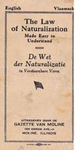

~~~~~~~~~~~~~~~~~ HET LEVENSLICHT~~~~~~~~~~~~~~~~~~
Felix Jena is te vondeling gelegd te Leuven.
De tijd van toen
Even schetsen:
In 1789 brak de Franse Revolutie uit. In 1795 werden we bij Franrijk aangehecht. We werden Franse staatsburgers of 'citoyens'. De graafschappen en hertogdommen werden vervangen door departementen. Typisch voor de Franse politiek was enerzijds de secularisering en anderzijds de eenvormigheid van de instellingen. De kerk, de godsdienst, mocht zich niet langer mengen in het openbaar leven en in de armenzorg. Dat was het werk van de staat of de burgerlijke overheid. De instellingen moesten overal dezelfde zijn. Dus een sterke centralisatie-tendens. In 1795 werden alle gemeenten onder de 5.000 inwoners afgeschaft en samengevoegd tot 'municipalités de canton', later we zeggen fusiegemeenten. Dat bleef zo tot 1800 toen Napoleon de gemeenten herstelde met een 'maire ' of burgemeester aan het hoofd.
Er waren heel wat vondelingen. Vooral wanneer legers van Napoleon door de dorpen trokken waren de gevolgen na 9 maanden zichtbaar. Napoleon I beweerde tijdens de Russische Veldtocht 'dat één nacht in Parijs een veldslag in Rusland goed maakte'.
De vondelingen werden dan ook 'enfants de la patrie' genoemd. Daarom lag Napoleon I aan de basis van de vondelingengestichten, 1 per arrondissement in de arrondissementshoofdplaats met schuif of trommel. De vondeling werd uitbesteed aan de minst vragende en kwam zo dikwijls op het platteland terecht. De uitbetaling gebeurde door de Commission d'Hospice Civile.
De Fransen lagen zonder twijfel aan de basis van de instellingen van onze moderne armenzorg. (1)
(1)Sociale geschiedenis: De armenzorg en de ocmw’s doorheen de geschiedenis. Dr. Henri Vannoppen. om een foto te vergroten : rechtermuisknop, afbeelding openen in nieuw tabblad
* Getypte versie van de voor eensluidend afschrift verklaarde geboorteakte
Du quatorzième jour du mois de Janvier l'an 1800 Sept à dix heures du matin. ACTE DE NAISSANCE de Felix, Jena. Enfant expôsé hier à six heures et demie du soir, devant la porte de la maison des Enfants de la patrie, six rue de le pelletier.
L'an 1800 Sept le quatorze de ce mois, à dix heures du matin, est comparue pardevant nous le sousigné adjoint au Maire de Louvain, faisant les fonctions d'Officier public de l'Etat civil Catherine Harnou', Directrice de la maison des Enfants de la patrie, six rue de le pelletier, qui nous a remis un enfant ... agé d'environ quatre jours, d'entoitellé dans des guenilles, lequel enfant la dite comparante nous a déclaré avoir trouver hier a six heures et demie, ... devant la pôrte de la maison des Enfants de la patrie, nous avons donné a cet enfant les noms de Felix Jena, l'avons remis entre les mains de la predite Directrice de tout quoi nous avons dressé le present propos verbal, les jour, mois an et heure que ... , que la dite comparante a signé avex nous. Signé Charles Vanderbelen.
Constaté suivant la Loi, par Moi Charles Vanderbelen, adjoint au Maire de Louvain, faisant les fonctions d'Officier public de l'étatcivil soussigné, Charles Vanderbelen
~~~~~~~~~Felix Jena ~~~~~~~~ 14 januari 1807.~~~~~~~~~~
Waar haalde Charles Vanderbelen de inspiratie voor de fantasierijke naam van onze voorvader.. Dikwijls werd voor de naam van een vondeling een bepaald patroon gevolgd.
FELIX vanwaar deze voornaam?
14 januari : is de naamdag van de heilige Felix van Nola. JENA
Zeer vaak werd de familienaam begonnen met de eerste letter van de maand waarin de vondeling gevonden werd. Felix werd in de maand januari gevonden, dus begint zijn familienaam met de letter J.
Gezien de politieke situatie en de doortocht van het leger van Napoleon enkele maanden voordien
greep Vanderbelen waarschijnlijk naar de volgende historische veldslag:
De dubbele veldslag bij Jena en Auerstedt had plaats op 14 oktober 1806 ten westen van de rivier Saale in Thüringen in Duitsland, bij de stad Jena en het kleine plaatsje Auerstedt. De legers van Napoleon Bonaparte van Frankrijk haalden er een doorslaggevende overwinning op het Pruisische leger van Frederik Willem III. Nog geen twee weken later stonden de Fransen in Berlijn en op 7 november capituleerde generaal Blücher in Lübeck(1).
(1) Wikipedia.
Met zulk een historische naam kan het niet anders dat Felix Jena een bijzonder man zou worden.
BURGERLIJKE STAND.
BURGEMEESTER VAN LEUVEN VAN HET TWEEDE ARRONDISSEMENT VAN HET DEPARTEMENT VAN DE DIJLE
PROCES -VERBAAL
Op 14 januari 1807 om 6 uur in de morgen, is voor ons ondergetekende plaatsvervanger van de burgemeester van Leuven in functie van officier van de burgerlijke stand, verschenen, mevrouw Cahtérine Harnou, directrice van het huis van Enfants de la patrie, gezeteld in de Le Pelletier straat, die ons heeft overhandigd een kind van het mannelijk geslacht, van een leeftijd van ongeveer vier dagen, in lompen gehuld. Het kind was de avond voordien gevonden aan de deur van la maison des Enfants de la patrie. Wij hebben het kind de naam van Felix Jena gegeven en hem in handen van de voornoemde directrice teruggegeven.
Met de hand bijgeschreven:
De vondeling toevertrouwd aan opvoeder Jean Baptiste Vinckx in Blanden met een vergoeding van 3-6-0 gulden courant.
De naam Rue Le Pelletier te Leuven bestaat momenteel niet meer. Heden is het een zijstraatje van de Parijsstraat : Barbarastraat. Volgens documentatie is daar inderdaad een vondelingentehuis geweest.
Jean Baptiste Vinckx heeft nog een vondeling uit Leuven opgevangen op 22 januari 1804: Plutus Guillaume. Het kind is overleden op 23 oktober 1805.
Gegevens : Joannes Baptista VINCKX ca 1781-1810 & Anna Maria MEULEMANS 1774-1810
Kinderen: Joseph VINCKX 1801-1886
Anne Marie VINCKX 1806-
Jean Baptiste en zijn echtgenote zijn beide overleden in 1810.
Daarna werd Felix Jena, die toen 3 jaar oud was, overgeplaatst naar de weduwe van Michel Meulemans te Haasrode.
In 1813 verhuisde Felix Jena naar de weduwe van Theodore Bruyninckx te Oud-Heverlee. Hier verbleef hij tot 1 januari 1825. Toen had hij de leeftijd van 15 jaar. Hij werd als volwassen beschouwd. Hij was oud genoeg om gaan te werken.
Blijkbaar had Felix fysische mankementen daar hij werd ingeschreven in het register van de “Infirmes”.
De tweede alinea duidt op het huwelijk tussen Felix Jena en Maria Verhulst.
(Matrimonium = huwelijk) om een foto te vergroten : rechtermuisknop, afbeelding openen in nieuw tabblad
Anna Maria Verhulst
Gedoopt op 15 juli 1802 te Sint-Joris-Weert
Ouders
Vader: Joannes Verhulst Beroep: werkman
Moeder: Joanna Maria Coekelbergs
Broers en zusters
Maria Verhulst 09/07/1798 -
Anna Maria Verhulst 15/07/1802 - 22/02/1870 Felix Jena
Joannes Franciscus Verhulst 30/11/1805 -
Joanna Maria Verhulst 05/05/1808 - 13/02/1881 Petrus Schroeders
Guillielmus Verhulst 08/09/1811 -
uittreksel uit het rijksregister, overlijdingsakte
geboren op 30 januari 1832 en overleden op 25/02/1834 op de leeftijd van drie jaar.
Jan Baptist Jena
uittreksel uit het rijksregister, geboorteakte
uittreksel uit het parochieregister, doopakte
Oudste zoon van Felix en Anna. Gedoopt op 2 september 1835.
Overleden te Oud-Heverlee op 15 februari 1910.
Gehuwd met Joanna Delqui op 3 mei 1877.
Guillemin Albertus Jena.
uittreksel uit het rijksregister, geboorteakte
uittreksel uit het parochieregister, doopakte
Jongste zoon van Felix en Anna. Gedoopt op 8 januari 1839.
Overleden te Sint-joris-Weert op 16 april 1887
Gehuwd met Maria Theresia Delmé op 21 augustus 1862.
In ons familieverhaal is er sprake van een geloofstwist, maar wat is hiervan waar?
Even schetsen:
De Napoleontische wet van 8 april 1802 erkende naast de rooms-katholieke ook de
gereformeerde en de lutherse godsdiensten.
Tijdens het Hollands bestuur (1818-1830) maakten de Protestanten gebruik van deze godsdienstvrijheid om in onze gewesten “zieltjes” te winnen.
Gelovigen die in conflict kwamen met de pastoor gingen al eens op zoek naar een protestantse dominee.
In Sint-Joris-Weert had burgemeester Henri Horckmans een conflict met de pastoor (1849).
Bij het overlijden van de vrouw van de burgemeester weigerde pastoor Willems de begrafenis te doen.
Hierop ging de burgemeester naar Dominee Vandevelde te Leuven die dadelijk bereid was de eredienst te doen.
Een 50-tal gelovigen gingen luisteren naar de preek van de dominee.
Dit was de start van het Protestantisme in Sint-Joris-Weert.
In verscheidene geschriften spreekt men van een broeihaard.
In de wijken Heide en Zoet Water woonden enkele protestantse gezinnen en SJW kreeg een eigen kapel en een eigen dominee.
Zelfs de begraafplaats van Oud-Heverlee kreeg een aparte ingang en een stuk “ongewijde” grond.
Hetgeen er zich afspeelde in Sint-Joris-Weert past wel in ons verhaal…
In 1845 heerst er totale armoede in België en omliggende landen door de mislukte oogsten van aardappelen en granen.
In 1848 sloot de staat Wisconsin zich aan bij de Unie van de Verenigde Staten en begon de oproep voor emigranten.
De staat Wisconsin beloofde aan de emigranten goedkope landbouwgronden en arbeid.
Het uitzichtloze bestaan van vele dorpelingen deed hun de overstap naar het verre Amerika wagen.
In het geval van onze voorvader ligt niet de armoede aan de basis van zijn vertrek maar wel de invloed van zijn protestantse vrienden.
Hij ging na een moeilijk huwelijk gevuld met godsdiensttwisten op avontuur naar Amerika.
Hij was toen 47 jaar oud! En 23 jaar getrouwd. Hij liet zijn vrouw en twee zonen (van 19 jaar en 15 jaar) achter in SJW.
Antwerpse ronselaars kwamen in contact met Henri Horckmans en vrienden uit Sint-Joris-Weert en vertelden hun over het beloofde land aan de andere kant van de oceaan.
Eugène Laermans (1896)
De landverhuizers werden ze genoemd. De duizenden Vlamingen en Walen die hun land achterlieten en vertrokken voor een onbekend avontuur.
CATHARINA AUGUSTA
Felix Jena en 68! Inwoners van Sint-Joris-Weert vertrokken met een stoomboot van de Red Star Line Compagnie genaamd de
CATHARINA AUGUSTA
Van Antwerpen naar New York (Ellis eiland) op 29 juli 1854.
Zijn incheckgegevens:
Passenger ID 9012007817668
Frame 112
Line number 47
Liberty ellis foundation:
NAME ARRIVED BIRTH PLACE SHIP NAME
Jena, Felix 1854 Belgium Catharina Augusta Felix Jena is nr. 87
De aankomst in Amerika moet indrukwekkend geweest zijn. De boot kwam aan op Ellis eiland te New York op 29 juli 1854.
Vandaar vertrokken ze per trein naar de staat Wisconsin en belandden in de stad Humboldt. 
Brochure bestaande uit 19 pagina’s zowel in het Engels als in het Nederlands.
1854
In de beginjaren woonde Felix Jena bij de familie Fontaine-Coppens en zich liet betalen als werkkracht op de boerderij.
Deze familie is samen met hem naar Amerika gereisd.
In de brochure van “the Flemish in Wisconsin”van Jeanne en Les Rentmeester, kunnen wij daar sporen van terug vinden:
- Allen: The original name of this family was Hallaux. Jean Baptisite Hallaux was born at Nethen in 1818 at Nethen; his wife Josephine Coppens, was born at SJW on 13 jan 1822. They were married in April 1834 and, with five children arrived at the NY harbor aboard the Catherine Augusta on 29 july 1854. JB died of cholera at Little Chute on the way to Green Bay.
- Fontaine: Henry Fontaine married E. Pleesters… They emigrated to the town of Humboldt in 1854. After E. Pleesters died, Henry became the second husband of Josephine Coppens. Their children were: Sophie; Monica and August.
1858
Op 22 februari 1858 kocht Felix Jena grond aan.
120 acres wat overeenkomt met 48 hectare.
Gelegen in het dorp Humboldt in Brown county.
In bovenstaande link kan je al de details vinden.
Op google earth kan je de huidige toestand vinden.
Coördinaten: 44°29’45N - 87°49’05W
Gelegen in het zuiden aan de kruising van Finger Road en New Franklin Road (westen).
En in het noorden langs Humboldt Road.
https://maps.app.goo.gl/UxR8YZ1cMBHALpqP7?fbclid=IwAR1S3GEN-ufo-WUIpwhkYO_cifRFNf9bwTqdcDLoMNuTCRw2or0CkLHWAV0
Deze straten bestaan nog steeds!